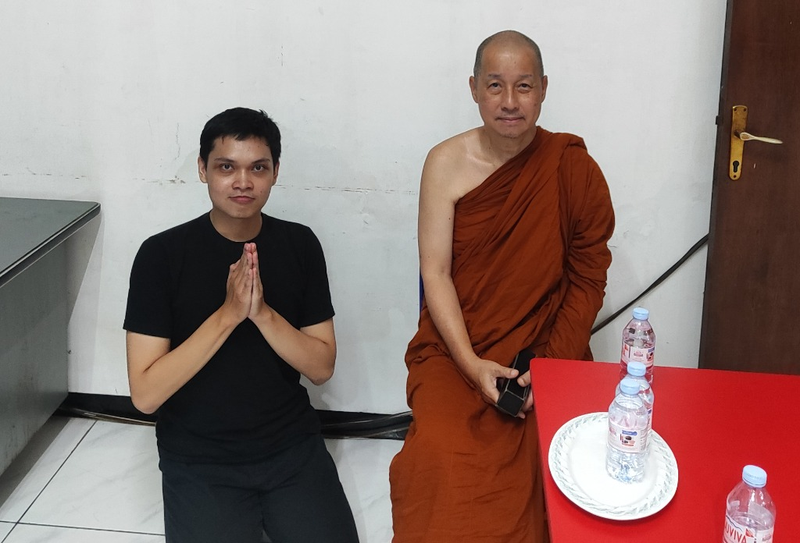

INSTITUT TEKNOLOGI SEPULUH NOPEMBER
Departemen Sistem Informasi
Tugas Akhir Sarjana · Surabaya
Bekerja sama dengan


| Judul Tugas Akhir | Sistem Temu Balik Informasi untuk Pencarian Semantik Multibahasa pada Kanon Pali dengan Adaptasi Domain Model Bahasa Berbasis Transformer |
| Mahasiswa | Alfa Renaldo Aluska (NRP 5026221144) |
| Dosen Pembimbing | Renny Pradina Kusumawardani, S.T., M.T. (NIDN 0017078108) |
Yang terhormat Bapak/Ibu Pakar, terima kasih atas kesediaan Bapak/Ibu menjadi penilai ahli dalam Tugas Akhir ini. Penilaian Bapak/Ibu menjadi acuan kebenaran (ground truth) untuk mengukur kualitas sistem. Terdapat dua asesmen yang dimohon untuk dilakukan, dijelaskan secara praktis di bawah ini.
Tujuan. Menilai seberapa relevan setiap pasase (kutipan/penggalan teks) yang ditampilkan sistem terhadap sebuah kueri (pertanyaan pencarian). Penilaian Bapak/Ibu menjadi tolok ukur ketepatan sistem.
| Nilai | Tingkat | Keterangan |
|---|---|---|
| 0 | Tidak Relevan | Pasase tidak memiliki hubungan apa pun dengan kueri. |
| 1 | Terkait | Pasase tampak terkait dengan kueri, tetapi tidak menjawab kueri. |
| 2 | Sangat Relevan | Pasase memuat jawaban untuk kueri, tetapi jawabannya mungkin sedikit kurang jelas, atau tersembunyi di antara informasi yang tidak relevan. |
| 3 | Relevan Sempurna | Pasase berfokus khusus pada kueri dan memuat jawaban yang tepat. |

Tujuan. Menilai kemudahan penggunaan antarmuka web myDhamma dengan instrumen baku System Usability Scale (SUS). Aplikasi diakses di https://md.renaldo.my.id — dapat dibuka di desktop maupun mobile, disarankan via desktop untuk pengalaman penuh.
Agar penilaian SUS tetap sahih, bagian ini sengaja tidak memuat tutorial langkah demi langkah. Mohon Bapak/Ibu mencoba menyelesaikan tugas berikut dengan cara sendiri — justru kemudahan menemukan caranya itulah yang turut dinilai.
Setelah selesai mencoba, mohon isi kuesioner kebergunaan (11 pertanyaan: 10 pernyataan baku SUS + 1 pertanyaan isian/saran, ±5 menit) di: https://its.id/m/evaluasistab